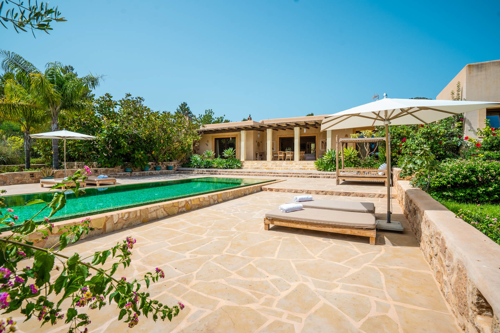
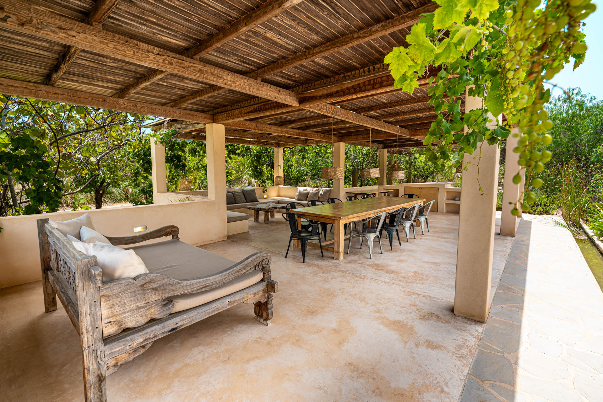

Équipements
Tout à Sa Place
Grande piscine dans un jardin entièrement clôturé. Transats, ombre de palmiers, intimité totale.
4 suites dans la maison principale + 1 grande annexe privée à 20 m. Espace et intimité pour tous.
Installation solaire off-grid complète. Autosuffisant, durable, et discrètement fier de l'être.
Alimentation en eau propre. Eau fraîche et naturelle, totalement indépendante du réseau.
Potager avec des produits de saison. Les hôtes sont invités à cueillir des légumes frais.
Poules en liberté dans la propriété. Un rappel que c'est un domaine vivant, pas un resort.
Pelouse ombragée sous les palmiers — une aire de jeux naturelle. Les familles sont les bienvenues.
Un grill d’extérieur pour les après-midis lents autour de produits locaux et du feu vif — le jardin à deux pas, le coucher de soleil devant, et aucune raison de se presser.
Tout le nécessaire pour cuisiner. Lave-vaisselle, machine à laver, tous les équipements.
Clim complète dans toutes les suites et l'annexe. Indispensable pour un été ibizenc.
Internet fibre dans toute la propriété. Fiable et discret, pour ceux qui en ont besoin.
Caméras IA haute performance sur les extérieurs. Tranquillité d'esprit jour et nuit.
Lit bébé et chaise haute disponibles. Les familles avec enfants sont chaleureusement accueillies.
Enceinte colonne de qualité professionnelle. Un son riche et enveloppant partout — pour des soirées calmes sous le ciel ibiza.
Galerie
Villa Jaia en Images


Disponibilité
Quand Venir
La Propriété
Voyez-la. Ressentez-la.
Quelques minutes à travers Can Jaia — le jardin, la piscine, la lumière.
Localisation
Le Secret Bien Gardé d'Ibiza Sud-Ouest
Can Jaia · Sant Agustí des Vedrà · 07829 · Ibiza · Espagne
Loin du bruit, proche de tout ce qui vaut le détour. Une voiture est indispensable — et ça fait partie de l'expérience.
Réservations
Réservez Votre Séjour
Réservez en direct au meilleur tarif disponible. Aucune commission, aucun intermédiaire — une conversation personnelle, et nous nous occupons de tout.
Arrivée dès 14h00 · Départ avant 10h00 · +34 637 472 828
Notre Collection
Découvrez Aussi

Noto · Sicile · Italie
Villa Magnus
Un domaine privé dans le Val di Noto — trois chambres pour six, une piscine à débordement saline sans chlore et le silence des collines siciliennes. Site classé au Patrimoine mondial de l'UNESCO.
Découvrir Villa Magnus